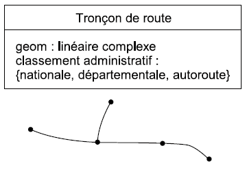
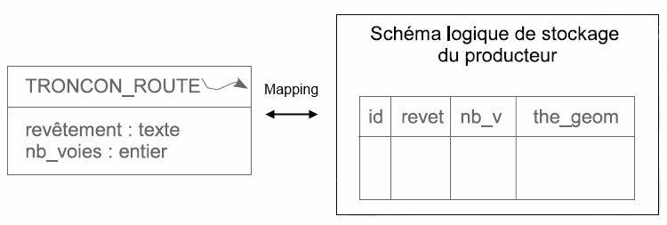
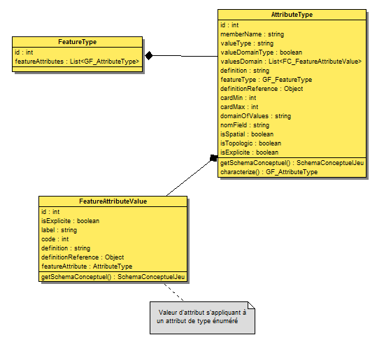
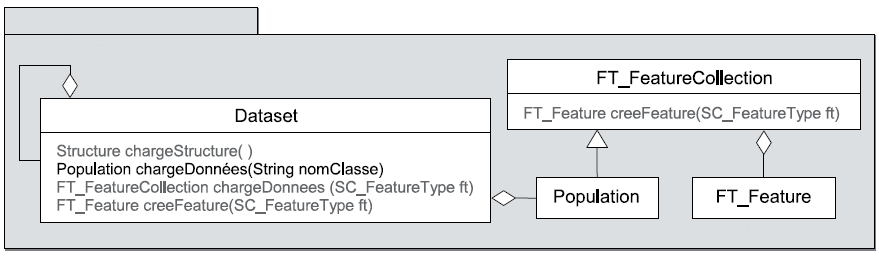

Feature : structure et manipulation
Introduction
GeOxygene propose un schéma logique générique pour l’exploitation des données. Il est basé sur le concept OGC d’objets géographiques.
En réalité il existe 2 schémas logiques indépendants, implémentés dans GeOxygene :
- Le premier est basé sur des objets géographiques métiers héritant de FT_Feature
- Le second est générique, les objets géographiques sont implémentés dans un même objet DefaultFeature
À cela s’ajoutent les concepts de jeu de données (DataSet), de populations d’objets d’un même type (Population), de collections d’objets quelconques (FT_FeatureCollection).
Remarque importante : si les FT_Feature et FT_FeatureCollection sont conformes au modèle de l’OGC, ce n’est pas le cas des classes DataSet et Population. Ces classes sont un enrichissement des spécifications OGC.
{kind=link}
Figure 1 : Diagramme de classe Feature
Le module geoxygene-feature contient l’implémentation des objets géographiques.
Cette page présente les Feature dans GeOxygene, d’abord en définissant précisément les objets puis en donnant quelques exemples d’utilisation.
Schéma géographique : définitions
1. Feature
Un Feature est un objet géographique qui a, en particulier, des attributs et une géométrie. La définition exacte d’un feature, d’après la norme ISO 19101 est :
A feature is an abstraction of a real world phenomenon; it is a geographic feature if it is associated with a location relative to the Earth.Par exemple on peut avoir comme Feature : TRONCON_ROUTE, NOEUD_ROUTIER, ZONE_ACTIVITE
Figure 2 : Feature Tronçon de route
Les classes dites géographiques (routes, rivières, …) héritent soit de « FT_Feature » soit de « DefaultFeature », autrement dit FT_Feature & DefaultFeature sont les classes mères des classes géographiques.
1.1. DefaultFeature
Un DefaultFeature est un Feature générique. Les attributs sont représentés dans une table et ne peuvent pas être accédés autrement dit il n’y a pas de getter ni de setter spécifique à un attribut. L’objet géométrique doit être casté suivant son type.
Un defaultFeature est cependant associé à un FeatureType avec toutes les descriptions de ses attributs, types de valeurs etc. C’est au développeur de s’assurer que le defaultFeature reste conforme à la définition de son featureType.
Au premier chargement, s’il n’y a pas de featuretype renseigné, un nouveau featureType est généré automatiquement grâce aux colonnes de la table. Mais cela ne constitue pas un schéma conceptuel (voir point n°5), il doit donc être précisé manuellement dès que possible pour les utilisations ultérieures (notamment pour identifier les relations entre objets etc.)
1.2. FT_Feature
Un FT_Feature est un Feature qui correspond à un objet géographique métier, le type de la géométrie et les attributs sont connus. Chaque attribut de l’objet géographique devient un attribut de l’objet java. La classe FT_Feature étant abstraite, les nouveaux features doivent donc étendre cette classe.
Les classes sont construites en général par un mapping sur des données stockées dans un SGBD relationel. Le mapping entre les environnements objet et relationnel est assuré par des librairies de persistance open source, Hibernate ou/et OJB. Cette technique est utilisée pour la généralisation, car elle permet de sauvegarder les « états » intermédiaires des features.
Figure 3 : Mapping relationnel / objet
import fr.ign.cogit.geoxygene.feature.FT_Feature; public class TronconDeRoute extends FT_Feature { /** Renvoie la géométrie de l'objet, castée plus précisément qu'avec la méthode getGeom() */ public GM_LineString getGeometrie() {return (GM_LineString)geom;} /** Définit la géométrie de l'objet, castée plus précisément qu'avec la méthode setGeom() */ public void setGeometrie(GM_LineString G) {this.geom = G;} protected double nb_voies; public double getNb_voies() {return this.nb_voies; } public void setNb_voies (double Nb_voies) {nb_voies = Nb_voies; } protected String revetement; public String getRevetement() {return this.revetement; } public void setRevetement (String revetement) {revetement = revetement; } }
{kind=link}
{kind=link}
2. FeatureType
Un FeatureType fournit les métadonnées d’un Feature, c’est à dire une description des informations d’un objet géographique.
Ci-dessous un exemple de FeatureType pour un Feature TRONCON_ROUTE
<FeatureType id="1"> <typeName>route</typeName> <definition>les routes sur lesquelles on roule</definition> <positionInitiale>10,10</positionInitiale> <nomClasse>donnees.sandrine.classesGenerees.Route</nomClasse> <isExplicite>1</isExplicite> <AttributeType id="1"> <memberName>revêtement</memberName> <valueType>text</valueType> </AttributeType> <AttributeType id="2"> <memberName>geom</memberName> <valueType>polyligne</valueType> </AttributeType> </FeatureType>Le FeatureType peut être utilisé :
- pour accéder à la liste des attributs disponibles d’un Feature
- à la création d’un nouveau Feature, les métadonnées permettent de définir l’ensemble des informations à saisir.
3. AttributeType
Les attributs d’un Feature décrivent ses propriétés qualitatives et quantitatives.
Par exemple : classement_administratif, nb_voies, numéro, ...
Figure 4 : DC - Attribute
{kind=link}
4. FeatureCollection, Population, DataSet
Des FT_Feature peuvent s’agréger en FT_FeatureCollection, classe qui représente donc un groupe de FT_Feature et qui porte des méthodes d’indexation spatiale.
Figure 5 : Collection, DataSet et Population
La classe DataSet représente un jeu de données. Par exemple :
- un extrait de bases de données sur une zone géographique limitée, datant de l’année 2003
- thème hydrographie d’une base de données topographiques
Un « thème » sous-ensemble d’un jeu de données, est lui-même un DataSet.
Un DataSet porte quelques métadonnées (zone, année, ...).
Un DataSet se compose de plusieurs Populations. La classe Population représente une FT_FeatureCollection particulière : il s’agit de TOUS les FT_Feature d’un DataSet, de même type.
{kind=link}
5. Schema
Le schéma dans GeOxygene est le schéma conceptuel d’un jeu de données. Il correspond à la notion “Application schema” dans les normes ISO. Nous définissons ici ce type comme un ensemble de classes et de relations (associations et héritage) comportant des proprietés (attributs, rôles, opérations) et des contraintes.
Dans GeoTools un “schema” designe la structure d’un feature et non pas un jeu de données.
SchemaDefaultFeature : Description du schéma logique d’un DefaultFeature (table de SGBD). Ce schéma contient le nom de la table (ou du fichier GML ou autre...) et une lookup table indiquant le nom des attributs et leur emplacement dans la table attributes[] du defaultFeature. Dans le cas où une métadonnée de structure est disponible (soit stockée quelque part soit donnée par l’utilisateur lors du chargement), ce schéma contient aussi une référence vers le schéma conceptuel : le featureType correspondant au DefaultFeature.

Figure 6 : Diagramme de classes : Schema, Collection, DataSet et Population
Quelques exemples d’application
Afficher la valeur de l’attribut OBJECTID :
// IFeature feature = itCollection.next(); for (int k = 0; k < feature.getFeatureType().getFeatureAttributes().size(); k++) { GF_AttributeType attributeType = feature.getFeatureType().getFeatureAttributes().get(k); if (attributeType.getMemberName().equals("OBJECTID")) { System.out.println(feature.getAttribute("OBJECTID")); } }
Ajouter un élément à une collection de DefaultFeature (le Schéma et le FeatureType sont déjà renseignés) :
DefaultFeature n = entrees.nouvelElement(first.toGM_Point()); Object[] attributes = new Object[] { t.getId(), t.getLargeurVoie(), new Integer(i + 1) }; n.setAttributes(attributes);
Création d’une collection de features, du schéma et du featureType
// Créer un featuretype du jeu correspondant FeatureType newFeatureType = new FeatureType(); newFeatureType.setTypeName("troncon"); newFeatureType.setGeometryType(ILineString.class); AttributeType idTroncon = new AttributeType("idTroncon", "String"); AttributeType typeLargeurVoie = new AttributeType("largeurV", "double"); AttributeType numVoie = new AttributeType("numVoie", "int"); newFeatureType.addFeatureAttribute(idTroncon); newFeatureType.addFeatureAttribute(typeLargeurVoie); newFeatureType.addFeatureAttribute(numVoie); // Création d'un schéma associé au featureType SchemaDefaultFeature schema = new SchemaDefaultFeature(); schema.setFeatureType(newFeatureType); newFeatureType.setSchema(schema); Map<Integer, String[]> attLookup = new HashMap<Integer, String[]>(0); attLookup.put(new Integer(0), new String[] { idTroncon.getNomField(), idTroncon.getMemberName() }); attLookup.put(new Integer(1), new String[] { typeLargeurVoie.getNomField(), typeLargeurVoie.getMemberName() }); attLookup.put(new Integer(2), new String[] { numVoie.getNomField(), numVoie.getMemberName() }); schema.setAttLookup(attLookup); // Création de la population Population<DefaultFeature> entrees = new Population<DefaultFeature>(false, "entrees", DefaultFeature.class, true); entrees.setFeatureType(newFeatureType); // On ajoute les defaults features à la collection for () { DefaultFeature n = entrees.nouvelElement(first.toGM_Point()); n.setSchema(schema); Object[] attributes = new Object[] { t.getId(), t.getLargeurVoie(), new Integer(i + 1) }; n.setAttributes(attributes); } // Export en fichier shape par exemple CoordinateReferenceSystem crs = CRS.decode("EPSG:3035"); ShapefileWriter.write(entrees, "D:\\DATA\\entrees.shp", crs);